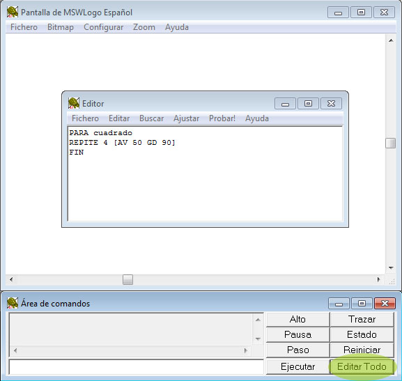
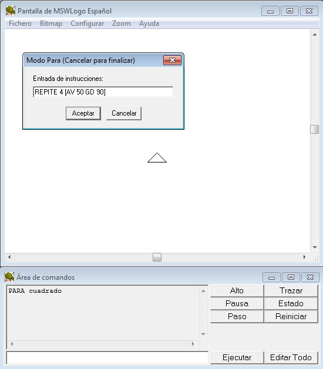

La primera consiste en utilizar el editor del programa; para ello haremos clic en la esquina inferior derecha donde pone Editar todo. Se nos abrirá una ventana en la que podemos escribir el procedimiento:

Tras escribir el procedimiento, seleccionamos dentro del menú Fichero la opción guardar y salir. El procedimiento quedará almacenado en la memoria y se acederá a él como si se tratase de una primitiva.
La segunda forma de escribir un procedimiento consiste en escribir la primera línea (PARA + nombre del procedimiento) y pulsar intro. Nos surgirá una ventana para que añadamos las primitivas con las instrucciones; después de cada primitiva pulsamos intro. Cuando hayamos introducido todas las líneas intermedias del procedimiento (en el caso del cuadrado sólo es una) hacemos clic en Cancelar, para que el programa añada la línea FIN.

Cuando tenemos definido el procedimiento, basta con escribir su nombre (cuadrado) para que se ejecute, igual que si se tratara de una primitiva.
Para modificar el procedimiento, hacemos clic en Editar Todo y nos surgirá una ventana con el código de todos los procedimientos que hayamos definido. Podemos modificarlos y guardar cambios.